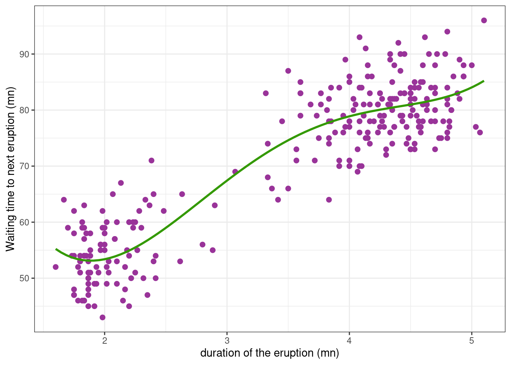

library(tidyverse)
library(parallel)
theme_set(theme_bw())Nonlinear Regression
Lecture Notes
Preliminary
Only functions from R-base and stats (preloaded) are required plus packages from the tidyverse for data representation and manipulation. You could also try the package broom that standardizes the output of built-in R functions for statistical modelling
1 Introduction
The faithful data (provided by the R base package datasets) consist of the waiting time between eruptions and the duration of the eruption for the Old Faithful geyser in Yellowstone National Park, Wyoming, USA.
Let us see how these data look like.
Show the code
faithful_plot <-
faithful %>%
ggplot() + aes(x = eruptions, y = waiting) +
geom_point(size=2, colour="#993399") +
ylab("Waiting time to next eruption (mn)") + xlab("duration of the eruption (mn)")
faithful_plotWe aim to fit a model to this data that describes the relationship between duration and waiting time.
If we try to fit a fit a polynomial model, we can check that a polynomial of degree 4 is considered as the “best polynomial model”.
poly4 <- lm(waiting ~poly(eruptions, 4), data = faithful)faithful_plot <-
faithful_plot +
geom_smooth(method = "lm", formula = y ~ poly(x, 4), se = FALSE, colour="#339900")
faithful_plot
Even if this model is the “best” polynomial model, we may have serious doubts on the capabilities of the model to predict waiting times for durations outside of the observed range of durations.
Interactive Polynomial Regression fits
Furthermore, parameters of the model, i.e. the polynomials’ coefficients, have no obvious physical interpretation. Using a polynomial model here, we are therefore not seeking to build a structural model f that approximates a physical phenomenon, but merely seeking to rely the variability in the observations to the explanatory variables x, x^2, … We therefore need to consider other types of models, i) that do not necessarily assume linear relationships between the response variable and the explanatory variables, ii) whose parameters have some physical interpretation.
A logistic function (or logistic curve) is a common “S” shape (sigmoid curve), with equation:
f_1(x) = \frac{A}{1+{\rm exp}(-\gamma(x-\tau))}
Here, A is the limiting value (when x \to \infty), \gamma measure the steepness of the curve and \tau is the x-value of the sigmoid’s midpoint.
This model is a nonlinear model in the sense that the regression function f_1 is a nonlinear function of the parameters.We can fit this model to our data using the nls function.
nlm1 <- nls(waiting ~ A / ( 1 + exp(- gamma * (eruptions -tau))), faithful, start = c(A=70, gamma=2, tau=1))
summary(nlm1)
Formula: waiting ~ A/(1 + exp(-gamma * (eruptions - tau)))
Parameters:
Estimate Std. Error t value Pr(>|t|)
A 93.1097 4.5080 20.654 < 2e-16 ***
gamma 0.6394 0.1022 6.254 1.57e-09 ***
tau 1.4623 0.1092 13.391 < 2e-16 ***
---
Signif. codes: 0 '***' 0.001 '**' 0.01 '*' 0.05 '.' 0.1 ' ' 1
Residual standard error: 5.763 on 269 degrees of freedom
Number of iterations to convergence: 9
Achieved convergence tolerance: 6.187e-06We will see in the next sections what these results are and how they are computed.
An extension of the logistic function assumes a minimum waiting time S between eruptions:
f_2(x) = S + \frac{A-S}{1+{\rm exp}(-\gamma(x-\tau))}
We can again use nls to fit this nonlinear model to the data:
nlm2 <- nls(waiting ~ (A-S) / ( 1 + exp(-gamma * (eruptions - tau)) ) + S, faithful, start = c(A=90, gamma=2, tau=2, S=50))
summary(nlm2)
Formula: waiting ~ (A - S)/(1 + exp(-gamma * (eruptions - tau))) + S
Parameters:
Estimate Std. Error t value Pr(>|t|)
A 82.4659 0.9973 82.689 < 2e-16 ***
gamma 2.2539 0.4355 5.175 4.47e-07 ***
tau 3.0553 0.1107 27.610 < 2e-16 ***
S 51.3221 1.8303 28.040 < 2e-16 ***
---
Signif. codes: 0 '***' 0.001 '**' 0.01 '*' 0.05 '.' 0.1 ' ' 1
Residual standard error: 5.622 on 268 degrees of freedom
Number of iterations to convergence: 9
Achieved convergence tolerance: 6.293e-06We can now compute and plot the waiting times predicted with these two fitted models
Show the code
faithful_plot <- faithful_plot +
geom_smooth(
method = "nls", se = FALSE, color = "#E69F00",
formula = y ~ A / ( 1 + exp(- gamma * (x-tau))),
method.args = list(start = c(A=70, gamma=2, tau=1))) +
geom_smooth(
method = "nls", se = FALSE, color = "#56B4E9",
formula = y ~ (A-S) / ( 1 + exp(-gamma * (x-tau)) ) + S,
method.args = list(start=c(A=90, gamma=2, tau=2, S=50)))
faithful_plotWe will see in the next sections
- how to fit a nonlinear model to the data. We will use the model f_1 and show how to retrieve the results of
nlm1. - how to evaluate the capability of the model to describe the observed data,
- how to compare possible models,
- how to compute confidence intervals and prediction intervals for predicted values.
2 Fitting a nonlinear model
2.1 Estimation of the parameters of the model
2.1.1 Least squares estimation
In the model
y_j = f(x_j,\beta) + \varepsilon_j \quad ; \quad 1\leq j \leq n The least squares (LS) estimator of \beta minimizes the residual sum of squares (RSS)
\hat{\beta} = \arg\min_{\beta}\sum_{j=1}^n (y_j - f(x_j,\beta))^2
Here, there is no closed-form expression for \hat{\beta}. An optimization procedure is then used for computing \hat{\beta}.
We define the first model {\cal M}_1 as
y_j = f_1(x_j,\beta) + \varepsilon_j \quad ; \quad 1\leq j \leq n
where f_1 is the logistic function defined above and where \beta = (A,\gamma,\tau). In R,
f_1 <- function(beta, x) {
A <- beta[1]; gamma <- beta[2]; tau <- beta[3]
A / ( 1 + exp(- gamma * (x-tau)))
}Let us check that function nls computes the nonlinear least-squares estimates of the parameters of the (nonlinear) model, that is, solve the above optimization problem in \beta. We first create a function that computes the residual sum of squares for a given vector of parameters \beta, which will be the objective (or cost) function from the optimization point of view:
rss_1 <- function(beta, x, y) sum( (y - f_1(beta, x) )^2 ) Then the LS estimate of \beta can be computed using nlm (nonlinear minimization) which minimizes the residuals sum of squares using a Newton-type algorithm.
optim_nlm1 <- nlm(rss_1, c(A = 90, gamma = 2, tau = 2), faithful$eruptions, faithful$waiting)
beta_hat <- setNames(optim_nlm1$estimate, names(coef(nlm1)))
beta_hat A gamma tau
93.1100965 0.6393835 1.4622674 Assume now that the residual errors are random variables with mean 0 and variance \sigma^2
\mathbb{E}[\varepsilon_j] = 0 \quad, \quad \mathbb{E}[\varepsilon_j^2] = \sigma^2 \quad, \quad 1 \leq j \leq n
Then, following the approach for linear models, if \beta is a vector of length p, there are n-p degrees of freedom,the residual error variance is defined as
\hat{\sigma}^2 = \frac{1}{n-p} \sum_{j=1}^n \left( y_j - f(x_j,\hat{\beta})\right)^2
and the so-called residual standard error is
\hat{\sigma} = \sqrt{\hat{\sigma}^2}
n <- nrow(faithful)
p <- length(beta_hat)
df <- (n - p)
sigma_hat <- sqrt(rss_1(beta_hat, faithful$eruptions, faithful$waiting)/df)
sigma_hat[1] 5.7628872.1.2 Maximum likelihood estimation
Let \varepsilon_j=\sigma \varepsilon_j where (\varepsilon_j) is a sequence of independent and normally distributed random variables with mean 0 and variance 1
\varepsilon_j \sim^{\mathrm{iid}} \mathcal{N}(0, 1).
We can then rewrite the model as follows:
y_j = f(x_j,\beta) + \sigma \varepsilon_j \quad ; \quad 1\leq j \leq n
The maximum likelihood (ML) estimator of \beta coincides with the least squares estimator
\begin{aligned} \hat{\beta} &= \arg\min_{\beta}\sum_{j=1}^n \left(y_j - f(x_j,\beta)\right)^2 \end{aligned}
and the ML estimators of \sigma^2 and \sigma are
\hat{\sigma}^2_{\rm ml} = \frac{1}{n} \sum_{j=1}^n \left(y_j - f(x_j,\hat{\beta})\right)^2, \qquad \hat{\sigma}_{\rm ml} = \sqrt{\hat{\sigma}^2_{\rm ml}}
sigma_hat_ML <- sqrt(rss_1(beta_hat, faithful$eruptions, faithful$waiting) / n)
sigma_hat_ML[1] 5.7310182.2 Standard errors of the parameter estimates
Several methods exist for estimating the standard errors of the parameter estimates. In particular, the nls function uses a linear approximation of the model, but a likelihood approach or a parametric bootstrap may also provide estimates of these s.e.
2.2.1 Linearization approach
An nls object has methods for several generic functions, including vcov which computes the variance-covariance matrix of the estimated parameters \hat{\beta}.
vcov(nlm1) A gamma tau
A 20.3217800 -0.451414947 0.432032828
gamma -0.4514149 0.010452940 -0.008769224
tau 0.4320328 -0.008769224 0.011923454The standard errors of the estimates are then the square roots of the diagonal elements of this matrix
sqrt(diag(vcov(nlm1))) A gamma tau
4.5079685 0.1022396 0.1091946 The nls function linearizes the model for computing this variance-covariance matrix. Indeed, for any \beta ``close’’ to \hat{\beta},
f(x_j , \beta) \simeq f(x_j , \hat{\beta}) + \nabla f(x_j , \hat{\beta})(\beta - \hat{\beta})
where \nabla f(x_j , {\beta}) is the gradient of f(x_j , {\beta}), i.e. the row vector of the first derivatives of f(x_j ,{\beta}) with respect to the d components of \beta. Setting z_j=y_j-f(x_j , \hat{\beta}) + \nabla f(x_j , \hat{\beta}) \hat{\beta} and g_j=\nabla f(x_j , \hat{\beta})), the original model can be approximated by the linear model
z_j = g_j \ \beta + \varepsilon_j.
Writing this model in the matrix form z=G\, \beta + \varepsilon where g_j is the jth row of matrix G, we can check that the LS estimator of \beta for this model is the LS estimator of the original model \hat{\beta}
Proposition 1 (Equivalence of the two LS estimate) The LS estimator of the linearized model is equivalent to the LS estimator of the original model:
\begin{aligned} \hat{\beta} &= \arg\min_{\beta}\sum_{j=1}^n(y_j - f(x_j,\beta))^2 \\ & = \arg\min{\beta}\sum_{j=1}^n(z_j - g_j\beta)^2 \\ \end{aligned}
Let \tilde{\beta} be the LS estimator of the linearized model. Then,
\begin{aligned} \tilde{\beta} &= \arg\min{\beta} \, \left\|z - G\beta \right\|^2 \\ &= (G^\prime G)^{-1}G^\prime z \\ &= (G^\prime G)^{-1}G^\prime (y - f(x,\hat\beta) + G\hat\beta) \\ &= \hat\beta + (G^\prime G)^{-1}\nabla f(x,\hat\beta) (y - f(x,\hat\beta) ) \\ \end{aligned}
By definition, \hat\beta minimizes U(\beta) = \| y -f(x,\beta) \|^2. Then,
\nabla U(\hat\beta) = -2\nabla f(x,\hat\beta) (y - f(x,\hat\beta) )= 0
Thus, \tilde\beta=\hat\beta \Box.
Let us check this property numerically:
hx <- deriv(
expr = y ~ A / ( 1 + exp(- gamma * (x - tau))),
namevec = c("A", "gamma", "tau"),
function.arg = function(A, gamma, tau, x) { }
)
fr <- hx(beta_hat[1], beta_hat[2], beta_hat[3], faithful$eruptions)
G <- attr(fr, "gradient")
z <- faithful$waiting - f_1(beta_hat, faithful$eruptions) + G %*% beta_hat
solve(crossprod(G)) %*% crossprod(G,z) [,1]
A 93.110121
gamma 0.639383
tau 1.462268Since \hat{\beta} =(G^\prime G)^{-1}G^\prime z, the variance-covariance of \hat\beta can be approximated by
\mathbb{V}_{\rm lin}(\hat\beta) = \hat\sigma^2 (G^\prime G)^{-1}
V_lin <- sigma_hat^2*solve(t(G)%*%G)
V_lin A gamma tau
A 20.3230488 -0.451427057 0.432076372
gamma -0.4514271 0.010452837 -0.008769862
tau 0.4320764 -0.008769862 0.011924743and we can derive standard errors ({\rm se}_{\rm lin}(\hat{\beta}_k), 1 \leq k \leq p) for the parameter estimates,
se_lin <- sqrt(diag(V_lin))
se_lin A gamma tau
4.5081092 0.1022391 0.1092005 2.2.2 Maximum likelihood approach
Let I_y(\hat{\beta}) be the observed Fisher information matrix at \hat{\beta}:
\begin{aligned} I_y({\hat\beta}) &= - \frac{\partial^2}{\partial \beta \partial \beta^\prime} \log \ell(\hat{\beta},\hat{\sigma}^2) \\ &= \frac{1}{2\hat\sigma^2}\frac{\partial^2}{\partial \beta \partial \beta^\prime} \left(\sum_{j=1}^n(y_j - f(x_j,\hat\beta))^2 \right). \end{aligned}
Then, the Central Limit Theorem states that the variance of \hat{\beta} can be approximated by the inverse of I_y(\hat{\beta}):
\mathbb{V}_{\rm ml}(\hat{\beta}) = I_y(\hat{\beta})^{-1}.
Function nlm can return the Hessian of the function rss_1 to minimize, i.e. the matrix of the second derivatives \partial^2/\partial \beta \partial \beta^\prime \sum_{j=1}^n(y_j - f(x_j,\hat\beta))^2
optim_nlm1 <- nlm(rss_1, c(90, 2, 2), faithful$eruptions, faithful$waiting, hessian = "true")
H <- optim_nlm1$hessian
H [,1] [,2] [,3]
[1,] 324.8939 10848.5 -3794.477
[2,] 10848.4973 379318.3 -114782.340
[3,] -3794.4768 -114782.3 58845.488We then derive the FIM and the variance \mathbb{V}_{\rm ml}(\hat{\beta}):
V_ml <- solve(H/(2*sigma_hat_ML^2))
V_ml [,1] [,2] [,3]
[1,] 17.4344834 -0.386666080 0.369991066
[2,] -0.3866661 0.008998208 -0.007381367
[3,] 0.3699911 -0.007381367 0.010576191and
se_ml <- sqrt(diag(V_ml))
se_ml[1] 4.17546206 0.09485888 0.10284061Beside, using the fact that \mathbb{V}(\chi^2(k))=2k, we can show that \mathbb{V}(\hat{\sigma}^2) \approx 2\sigma^4/n. Then the standard error of \hat{\sigma} is approximately \hat{\sigma}/\sqrt{2n}.
sigma_hat/sqrt(2*n)[1] 0.24708172.2.3 Parametric bootstrap
If we were able to repeat the same experiment under the same conditions, we would observe y^{(1)} = (y^{(1)}_j, 1\leq j \leq n) and we would compute \beta^{(1)}, an estimate of \beta. Then, if we could repeat this experiment L times, we would get L estimates \beta^{(1)}, \beta^{(2)}, , \beta^{(L)} of \beta. This sequence of estimates (\beta^{(\ell)}, 1 \leq \ell \leq L) would be a sample of random variables distributed as \hat{\beta} and could therefore be used for estimating this distribution.
When such replicates are not available, parametric bootstrap (or Monte-Carlo simulation) is a way to mimic the repetition of an experiment.
For \ell=1,2,\ldots, L, we generate “observations” (y^{(\ell)}_j, 1\leq j \leq n) with the model of interest, the original explanatory variables (x_j, 1\leq j\leq n) and using the estimated parameters \hat\theta=(\hat\beta,\hat{\sigma}^2):
y^{(\ell)}_j = f(x_j,\hat{\beta}) + \hat{\sigma} \varepsilon^{(\ell)}_j \quad ; \quad 1\leq j \leq n
where \varepsilon^{(\ell)}_j \sim^{\mathrm{iid}} \mathcal{N}(0,1). We also compute the LS /ML estimate of \beta:
\hat\beta^{(\ell)} = \arg\min_{\beta}\sum_{j=1}^n(y^{(\ell)}_j - f(x_j,\beta))^2
The variance-covariance matrix of \hat\beta is then estimated by the empirical variance-covariance matrix of (\hat\beta^{(\ell)}):
\mathbb{V}_{\rm mc}(\hat{\beta}) = \frac{1}{L-1}\sum_{\ell=1}^L ( \hat\beta^{(\ell)} - \bar{\beta} )( \hat\beta^{(\ell)} - \bar{ \beta} )^\prime
where \bar{ \beta} = 1/L \sum_{\ell=1}^L \hat\beta^{(\ell)}.
L <- 1000
y_hat_ref <- predict(nlm1)
beta_hat <- coef(nlm1)
x <- faithful$eruptions
betas_boot <- parallel::mclapply(1:L, function(b) {
y_b <- y_hat_ref + sigma_hat * rnorm(length(y_hat_ref))
coef(suppressWarnings(nls(y_b ~ f_1(beta, x), start = list(beta = beta_hat))))
}) %>% unlist() %>% matrix(ncol = L) %>% t()
V_mc <- cov(betas_boot)
V_mc [,1] [,2] [,3]
[1,] 26.4043508 -0.48971124 0.70305456
[2,] -0.4897112 0.01043275 -0.01128454
[3,] 0.7030546 -0.01128454 0.02251394se_mc <- sqrt(diag(V_mc))
se_mc[1] 5.1385164 0.1021408 0.1500465Remark. It would be equivalent to directly compute the empirical standard deviation of each component of the sequence (\hat\beta^{(\ell)}):
apply(betas_boot, 2, sd)[1] 5.1385164 0.1021408 0.1500465One of the main advantages of this method is that it doesn’t make any assumption on \hat\beta, contrary to the maximum likelihood estimator which asymptotic distribution is known to be normal, with a known asymptotic variance. Then, this asymptotic distribution is used with a finite set of observations for approximating the distribution of the ML estimator, but without knowing how good this approximation is. On its part, the linearization approach makes use of an approximation of the structural model, without knowing how good this approximation is.
In this example, the ML estimator seems to underestimate the standard error of the estimates. On the other hand, results obtained with the linearization approach are very similar to those obtained by Monte Carlo simulation.
2.3 Statistical tests for the model parameters
The summary of model nlm1 includes several informations about the model parameters:
summary(nlm1)$coefficient Estimate Std. Error t value Pr(>|t|)
A 93.1097365 4.5079685 20.654478 1.974767e-57
gamma 0.6393916 0.1022396 6.253854 1.567062e-09
tau 1.4622598 0.1091946 13.391323 1.110097e-31Let \beta = (\beta_k, 1\leq k \leq p) be the p-vector of parameters of the model. In the linearized model z=G\beta+e,
t_k = (\hat{\beta}_k - \beta_k)/{\rm se}(\hat{\beta}_k) follows a t-distribution with n-p degrees of freedom. We can then perform a t-test to test if \beta_k=0.
The test statistics is t_{{\rm stat}, k} = {\hat{\beta}_k}/{{\rm se}(\hat{\beta}_k)} and the p-value for this test is
p_k = 2(1 - \mathbb{P}(T_{n-d} \leq |t_{{\rm stat}, k}| )
t_stat <- beta_hat/se_lin
p_value <- 2*(1 - pt(abs(t_stat), n-p))
cbind(beta_hat, se_lin, t_stat, p_value) %>% round(4) beta_hat se_lin t_stat p_value
A 93.1097 4.5081 20.6538 0
gamma 0.6394 0.1022 6.2539 0
tau 1.4623 0.1092 13.3906 02.4 Confidence intervals for the model parameters
2.4.1 Linearization approach
Using the linearized model z = G\beta + \varepsilon, we can compute a confidence interval for each component of \beta as we do with any linear model:
{\rm CI}_{{\rm lin}, 1-\alpha}(\beta_k) = [\hat{\beta}_k + qt_{\alpha/2, n-p}\ {\rm se}_{\rm lin}(\hat{\beta}_k) \ , \ \hat{\beta}_k + qt_{1-\alpha/2, n-p}\ {\rm se}_{\rm lin}(\hat{\beta}_k)]
where qt_{p,\nu} is the quantile of order p for a t-distribution with \nu degree of freedom.
level <- 0.95
alpha <- 1 - level
CI_linearized <-
cbind(
beta_hat + qt(alpha/2, n-p) * se_lin,
beta_hat + qt(1-alpha/2,n-p) * se_lin) %>% as.data.frame() %>%
setNames(c(paste0((1-level)/2*100,"%"),paste0((1+level)/2*100,"%")))
CI_linearized 2.5% 97.5%
A 84.234072 101.9854010
gamma 0.438101 0.8406823
tau 1.247264 1.67725612.4.2 Maximum likelihood approach
We can adopt the same approach with the ML estimate. Here, the standard errors ({\rm se}_{\rm ml}(\hat{\beta}_k), 1 \leq k \leq p) are derived from the asymptotic variance-covariance matrix of the parameter estimates V_{\rm ml}(\hat{\beta}) .
{\rm CI}_{{\rm ml},1-\alpha}(\beta_k) = [\hat{\beta}_k + qt_{\alpha/2, n-p}\ {\rm se}_{\rm ml}(\hat{\beta}_k) \ , \ \hat{\beta}_k + qt_{1-\alpha/2, n-p}\ {\rm se}_{\rm ml}(\hat{\beta}_k)]
CI_ML <-
cbind(
beta_hat + qt(alpha/2,n-p) * se_ml,
beta_hat + qt(1-alpha/2,n-p) * se_ml) %>% as.data.frame() %>%
setNames(c(paste0((1-level)/2*100,"%"),paste0((1+level)/2*100,"%")))
CI_ML 2.5% 97.5%
A 84.8889950 101.3304780
gamma 0.4526314 0.8261519
tau 1.2597849 1.66473462.4.3 Parametric bootstrap
The sequence (\hat{\beta}^{(\ell)}, 1 \leq \ell \leq L) obtained by Monte Carlo simulation can be used for computing an empirical confidence interval:
{\rm CI}_{{\rm mc},1-\alpha}(\beta_k) = [\hat{\beta}_{k,\alpha/2} \ , \ \hat{\beta}_{k,1-\alpha/2} ] where, for any 0 < p < 1, \hat{\beta}_{k,p} is the empirical quantile of order p of (\hat{\beta}^{(\ell)}_k, 1 \leq \ell \leq L):
CI_bootstrap <-
apply(as.matrix(betas_boot), 2, quantile, probs = c(alpha/2, 1-alpha/2)) %>%
t() %>% as.data.frame() %>%
setNames(c(paste0((1-level)/2*100,"%"),paste0((1+level)/2*100,"%")))
CI_bootstrap 2.5% 97.5%
1 86.6121517 106.7548158
2 0.4535396 0.8646908
3 1.3192847 1.9207671Remark. These confidence intervals are slightly biased. We will use a linear model to explain where this bias comes from and show how to remove it.
Consider the linear model y = X\beta + \sigma\varepsilon. A confidence interval of level 1-\alpha for \beta_k is
{\rm CI}_{ 1-\alpha}(\beta_k) = [\hat{\beta}_k + qt_{\alpha/2, n-d}\ {\rm se}_(\hat{\beta}_k) \ , \ \hat{\beta}_k + qt_{1-\alpha/2, n-d}\ {\rm se}(\hat{\beta}_k)]
where {\rm se}(\hat{\beta}_k) = \hat\sigma^2 (X^\prime X)^{-1}_{kk}.
On the other hand, for \ell=1,2,\ldots,L,
y^{(\ell)} = X\hat{\beta} + \hat{\sigma} \varepsilon^{(\ell)}
and
\hat{\beta}^{(\ell)} = \hat\beta + \hat{\sigma}(X^\prime X)^{-1}X^\prime\varepsilon^{(\ell)}
Thus, conditionnally to the observations y, i.e. conditionnally to \hat\beta, \hat{\beta}_k^{(\ell)} \sim \mathcal{N}(\hat\beta_k \ , \ {\rm se}^2(\hat{\beta}_k)). Then, the empirical quantile \hat{\beta}_{k,p} is an estimator of the quantile of order p of a normal distribution with mean \hat\beta_k and variance {\rm se}^2(\hat{\beta}_k). In other words, the confidence interval {\rm CI}_{{\rm mc},1-\alpha}(\beta_k) is an estimator of the interval [\hat{\beta}_k + q\mathcal{N}_{\alpha/2}\ {\rm se}_(\hat{\beta}_k) \ , \ \hat{\beta}_k + q\mathcal{N}_{1-\alpha/2}\ {\rm se}(\hat{\beta}_k)], where q\mathcal{N}_p is the quantile of order p for a \mathcal{N}(0,1) distribution.
We see that these quantiles for a normal distribution should be tranformed into quantiles for a t-ditribution with n-d df.
An unbiased confidence interval for \beta_k is therefore
{\rm CI}^\star_{{\rm mc},1-\alpha}(\beta_k) = [\hat{\beta}_k + \frac{qt_{\alpha/2, n-d}}{q\mathcal{N}_{\alpha/2}}(\hat{\beta}_{k,\alpha/2} - \hat{\beta}_k)\ , \ \hat{\beta}_k + \frac{qt_{1-\alpha/2, n-d}}{q\mathcal{N}_{1-\alpha/2}}(\hat{\beta}_{k,1-\alpha/2} - \hat{\beta}_k)]
The same correction can be used for nonlinear models:
rq <- qt(1-alpha/2,df)/qnorm(1-alpha/2)
beta_hat + rq*(CI_bootstrap - beta_hat) 2.5% 97.5%
1 86.5827861 106.816484
2 0.4526997 0.865709
3 1.3186386 1.9228392.4.4 Profile likelihood
Function confint uses the profile likelihood method for computing confidence intervals for parameters in a fitted model.
CI_profiled <- confint(nlm1, level = level)
CI_profiled 2.5% 97.5%
A 87.1321726 105.5760368
gamma 0.4625255 0.8324095
tau 1.3109469 1.8569351Profile likelihood confidence intervals are based on the log-likelihood function.
Imagine that we want to compute a confidence interval for \beta_1. The profile likelihood of \beta_1 is defined by
\ell_p(\beta_1) = \max_{\beta_2, \ldots, \beta_d}\ell(\beta_1, \beta_2, \ldots, \beta_d )
\ell_p(\beta_1) does no longer depend on \beta_2, \ldots, \beta_d since it has been profiled out.
As an example, let us compute and display the profile log-likelihood of A for model nlm1
f_1A <- function(gamma,tau,x,A){A/(1+exp(-gamma*(x-tau)))}
values_A <- seq(86, 110, by = 0.1)
start <- list(gamma = beta_hat[2], tau = beta_hat[3])
logLik_A <- map(values_A, ~
nls(waiting ~ .x / ( 1 + exp(- gamma * (eruptions - tau))), faithful, start = start)
) %>% map(logLik) %>% map_dbl(as.numeric)Show the code
data.frame(A = values_A, logLik = logLik_A) %>%
ggplot() + aes(x = A, y = logLik) + geom_line(color="blue", size=1) +
geom_vline(xintercept = beta_hat[1], color="red", linetype = "longdash") +
scale_x_continuous(breaks = c(seq(85,110, by = 5), round(beta_hat[[1]],2)),"A")Warning: Using `size` aesthetic for lines was deprecated in ggplot2 3.4.0.
ℹ Please use `linewidth` instead.
Consider the test of H_0: \beta_1 = \beta_1^\star against H_1: \beta_1 \neq \beta_1^\star. The likelihood ratio statistics is
LR_{\rm stat} = 2\left(\log(\ell(\hat\beta)) - \log(\ell_p(\beta_1^\star))\right)
where \hat\beta is the value of \beta that maximises the likelihood \ell(\beta) under H_1.
Under H_0, LR_{\rm stat} follows a \chi^2 distribution with 1 df. Then, the test is significant (i.e. we reject H_0), if LR_{\rm stat}> q\chi^2_{1,1-\alpha} where q\chi^2_{1,1-\alpha} is the quantile of order 1-\alpha for a \chi^2 distribution with 1 df.
A “profile likelihood confidence interval” of level 1-\alpha for \beta_1 consists of those values \beta_1^\star for which the test is not significant.
qlevel <- qchisq(level,1)
lp_A <- function(A, qlevel) {
nlm1_A <- nls(waiting ~ A / ( 1 + exp(- gamma * (eruptions - tau))), faithful,
start = list(gamma = beta_hat[2], tau = beta_hat[3]))
res <- as.numeric(2*(logLik(nlm1) - logLik(nlm1_A) ) - qlevel)
res
}
c1_A <- uniroot(lp_A, c(80, beta_hat[1]), qlevel)$root
c2_A <- uniroot(lp_A, c(beta_hat[1], 110), qlevel)$rootShow the code
dlogLik_A <- 2*(as.numeric(logLik(nlm1)) - logLik_A)
data.frame(A = values_A, dlogLik = dlogLik_A) %>%
ggplot() + geom_line(aes(values_A,dlogLik), size=1, color="blue") +
geom_hline(yintercept=qlevel, color="red", linetype = "longdash") +
geom_segment(aes(x = c1_A, xend = c1_A, y=-Inf, yend=qlevel), color="red", linetype = "longdash") +
geom_segment(aes(x = c2_A, xend = c2_A, y=-Inf, yend=qlevel), color="red", linetype = "longdash") +
scale_y_continuous(breaks = c(0,2,3,6,round(qlevel,2)),1) +
scale_x_continuous(breaks = c(seq(85,100,by=5),round(c1_A,1),round(c2_A,1), 110),"A") 
Let us now compute the profile likelihood confidence intervals for \gamma and \tau
lp_gamma <- function(gamma) {
nlm1_gamma <- nls(waiting ~ A/(1 + exp(-gamma*(eruptions-tau))), faithful,
start = list(A=beta_hat[1],tau=beta_hat[3]))
as.numeric(2*(logLik(nlm1) - logLik(nlm1_gamma) ) - qlevel)
}
c1_gamma <- uniroot(lp_gamma, lower = 0.40, upper = beta_hat[2])$root
c2_gamma <- uniroot(lp_gamma, lower = beta_hat[2], upper=1)$root
lp_tau <- function(tau) {
nlm1_tau <- nls(waiting ~ A/(1+exp(-gamma*(eruptions - tau))), faithful,
start=list(A=beta_hat[1],gamma=beta_hat[2]))
as.numeric(2*(logLik(nlm1) - logLik(nlm1_tau) ) - qlevel)
}
c1_tau <- uniroot(lp_tau, lower=1.25, upper=beta_hat[3])$root
c2_tau <- uniroot(lp_tau, lower=beta_hat[3], upper=2.25)$root
CI_profiled_custom <-
rbind(A = c(c1_A , c2_A), gamma = c(c1_gamma, c2_gamma), tau = c(c1_tau, c2_tau)) %>%
as.data.frame() %>%
setNames(c(paste0((1-level)/2*100,"%"),paste0((1+level)/2*100,"%")))
CI_profiled_custom 2.5% 97.5%
A 87.1523081 105.4511191
gamma 0.4636369 0.8310879
tau 1.3118040 1.8520538Remark. The confint R function doesn’t use a \chi^2 distribution with 1 df for the LRT statistics LR_{\rm stat} (which is theoretically the right asymptotic distribution).
On the contrary, the square root of LR_{\rm stat} is assumed to follow a half t-distribution with n-p df. Then, the null hypothesis H_0 is rejected when LR_{\rm stat}> qt_{1-\alpha/2,n-p}^2.
qlevel <- qt(1-alpha/2,df)^2
c1R_A <- uniroot(lp_A, c(80, beta_hat[1]), qlevel)$root
c2R_A <- uniroot(lp_A, c(beta_hat[1], 110), qlevel)$root
c(c1R_A, c2R_A)[1] 87.13229 105.53713The two tests - and then the two confidence intervals - are equivalent for large n since a t-distribution with n df converges to a \mathcal{N}(0,1) when n goes to infinity. Then, for any 0 < p < 1,
(qt_{p,n})^2 \xrightarrow{n\to \infty} q\chi^2_{p,1}
3 Diagnostic plots
Let us plot
- the observed waiting times versus predicted waiting times,
- the residuals versus eruption times,
- the residuals versus predicted waiting times,
- the distribution of the residuals
Show the code
## unfortunately, no plotting function is defined for 'nls' object
residual_nlm1 <- resid(nlm1)/sd(resid(nlm1))
par(mfrow=c(2,2))
plot(predict(nlm1), faithful$waiting)
abline(a=0, b=1, lty=1, col="magenta")
plot(x, residual_nlm1)
abline(a=0, b=0, lty=1, col="magenta")
plot(predict(nlm1), residual_nlm1)
abline(a=0, b=0, lty=1, col="magenta")
boxplot(residual_nlm1)
abline(a=0, b=0, lty=2, col="magenta")
abline(a=qnorm(0.25), b=0, lty=2, col="magenta")
abline(a=qnorm(0.75), b=0, lty=2, col="magenta")On one hand, observations and predictions look well randomly distributed around the line y=x. On the other hand, residual look well distributed around 0, with a constant variance. Furthermore, the distribution of the residuals appears to be symmetrical with quantiles close to those of a normal distribution
Then, based on these graphs, we don’t have any good reason for rejecting model nlm1… which doesn’t mean we should stay with this model as our final model!
4 Model comparison
We can produce the same the diagnostic plots with model nlm2 and arrive at the same conclusion concerning this model.
Show the code
residual_nlm2 <- resid(nlm2)/sd(resid(nlm2))
par(mfrow=c(2,2))
plot(predict(nlm2), faithful$waiting)
abline(a=0, b=1, lty=1, col="magenta")
plot(x, residual_nlm2)
abline(a=0, b=0, lty=1, col="magenta")
plot(predict(nlm2), residual_nlm2)
abline(a=0, b=0, lty=1, col="magenta")
boxplot(residual_nlm2)
abline(a=0, b=0, lty=2, col="magenta")
abline(a=qnorm(0.25), b=0, lty=2, col="magenta")
abline(a=qnorm(0.75), b=0, lty=2, col="magenta")Since nlm1 and nlm2 are two possible model for fitting our data, we need some criteria for comparing them. The statistical tests and the information criteria used for comparing linear models can also be used for comparing nonlinear models.
First, we can perform a ANOVA for testing model nlm1 against model nlm2 since these two models are nested (nlm1 correponds to nlm2 when S=0)
anova(nlm1, nlm2)Analysis of Variance Table
Model 1: waiting ~ A/(1 + exp(-gamma * (eruptions - tau)))
Model 2: waiting ~ (A - S)/(1 + exp(-gamma * (eruptions - tau))) + S
Res.Df Res.Sum Sq Df Sum Sq F value Pr(>F)
1 269 8933.7
2 268 8469.4 1 464.3 14.692 0.0001578 ***
---
Signif. codes: 0 '***' 0.001 '**' 0.01 '*' 0.05 '.' 0.1 ' ' 1Let RSS_1 = \|y- f_1(x,\hat\beta_1)\|^2 and RSS_2 = \|y- f_2(x,\hat\beta_2)\|^2 be the residual sums of squares under, respectively, nlm1 and nlm2, and let d_1 and d_2 be lengths of vectors \beta_1 and \beta_2. Then,
F_{\rm stat} = \frac{(RSS_1 - RSS_2)/(d_2-d_1)}{(RSS_2)/(n-d_2}
RSS1 <- sum(resid(nlm1)^2)
RSS2 <- sum(resid(nlm2)^2)
p1 <- length(coef(nlm1))
p2 <- length(coef(nlm2))
F.stat <- ( (RSS1-RSS2)/(p2-p1) ) / ( RSS2/(n-p2) )
c(RSS2, RSS1 - RSS2, F.stat, 1-pf(F.stat, p2-p1, n-p2))[1] 8.469424e+03 4.642987e+02 1.469192e+01 1.577976e-04Remark: since the model is nonlinear, we cannot decompose the residual sum of squares RSS_1 as we did with linear models. Indeed, here,
\|y- f_1(x,\hat\beta_1)\|^2 \neq \|f_1(x,\beta_1) - f_2(x,\hat\beta_2)\|^2 + \|y- f_2(x,\hat\beta_2)\|^2
c(RSS1-RSS2, sum((predict(nlm1)-predict(nlm2))^2))[1] 464.2987 520.3557Another way to test nlm1 against nlm2 consists in testing if S=0 in model nlm2:
summary(nlm2)$coefficients Estimate Std. Error t value Pr(>|t|)
A 82.465891 0.9973074 82.688535 8.974348e-193
gamma 2.253936 0.4355265 5.175197 4.469538e-07
tau 3.055263 0.1106570 27.610216 2.420422e-80
S 51.322076 1.8302948 28.040334 1.110865e-81Even if both tests clearly prefer model nlm2, we can remark that the t-test and the F-test are not equivalent since the models are nonlinear.
Information criteria such as AIC and BIC also prefer model nlm2:
as.matrix(AIC(nlm1, nlm2)) df AIC
nlm1 4 1729.668
nlm2 5 1717.152as.matrix(BIC(nlm1, nlm2)) df BIC
nlm1 4 1744.092
nlm2 5 1735.1815 Confidence intervals and prediction intervals
There is no ready-made functions to calculate confidence intervals for predicted values and prediction intervals for new data. We will see how to do it by implementing two different methods.
5.1 The delta-method
For a given value x_0 of the explanatory variable x, we can use the model f with the estimated parameter \hat{\beta} and predict the response as f(x_0,\hat{\beta}).
Since \hat{\beta} is a random vector with variance-covariance matrix \mathbb{V}(\hat{\beta}), f(x_0,\hat{\beta}) is also a random variable that can be approximated by a linear function of \hat{\beta}
f(x_0 , \beta) \simeq f(x_0 , \hat{\beta}) + \nabla f(x_0 , \hat{\beta})(\beta - \hat{\beta})
Then, the so-called delta-method consists in using this approximation for approximating the variance of f(x_0,\hat{\beta}) by
\mathbb{V}(f(x_0,\hat{\beta})) \simeq \nabla f(x_0 , \hat{\beta}) \mathbb{V}(\hat{\beta}) \nabla f(x_0 , \hat{\beta})^\prime,
and we can now use this approximation for computing a (1-\alpha)100\% confidence interval for each prediction f(x_0,\beta):
{\rm CI}_{{\rm lin}, 1-\alpha}= [f(x_0,\hat{\beta}) + qt_{\alpha/2, n-p}\ {\rm s.e.}(f(x_0,\hat{\beta})) \ , \ f(x_0,\hat{\beta}) + qt_{1-\alpha/2, n-p}\ {\rm s.e.}(f(x_0,\hat{\beta}))]
where {\rm s.e.}(f(x_0,\hat{\beta})) is the standard error of f(x_0,\hat{\beta}) defined as
{\rm s.e.}(f(x_0,\hat{\beta})) = \sqrt{\nabla f(x_0 , \hat{\beta}) \mathbb{V}(\hat{\beta}) \nabla f(x_0 , \hat{\beta})^\prime}
We can also compute a prediction interval for a future observation y_0 = f(x_0,\beta) + \varepsilon_0
The prediction for y_0 is
\hat{y}_0 = f(x_0 , \hat{\beta}).
Then, the standard error for this prediction should take into account the uncertainty on f(x_0,\beta) and the variability of the residual error e_0:
{\rm s.e.}(\hat{y}_0) = \sqrt{\nabla f(x_0 , \hat{\beta}) \mathbb{V}(\hat{\beta}) \nabla f(x_0 , \hat{\beta})^\prime + \sigma^2}
Then,
{\rm CI}_{{\rm lin}, 1-\alpha}(y_0) = [f(x_0,\hat{\beta}) + qt_{\alpha/2, n-p}\ {\rm s.e.}(\hat{y}_0) \ , \ f(x_0,\hat{\beta}) + qt_{1-\alpha/2, n-p}\ {\rm s.e.}(\hat{y}_0)]
As an example, let us compute the variance of f_2(x_0, \hat{\beta}_2) for x_0 = 1, 1.1, 1.2, \ldots, 5.9, 6,
f_prime <- deriv(y ~ (A-S)/(1+exp(-gamma*(x-tau))) + S, c("A", "gamma", "tau", "S"), function(A, gamma, tau, S, x){} )
x_new <- seq(1, 6, by=0.1)
beta_hat <- coef(nlm2)
f_new <- f_prime(beta_hat[1], beta_hat[2], beta_hat[3], beta_hat[4], x_new)
grad_new <- attr(f_new, "gradient")
GS <- rowSums((grad_new %*% vcov(nlm2)) * grad_new)We can then derive a 95\% confidence interval for each f_2(x_0,\beta)
alpha <- 0.05
delta_f <- sqrt(GS) * qt(1-alpha/2, n - length(beta_hat))
df_delta <- data.frame(
x = x_new,
f = f_new,
lwr_conf = f_new - delta_f,
upr_conf = f_new + delta_f
)and for each y_0
delta_y <- sqrt(GS + sigma(nlm2)^2)*qt(1-alpha/2,df)
df_delta[c("lwr_pred","upr_pred")] <- cbind(f_new - delta_y,f_new + delta_y)We can now plot these two intervals together with the data:
Show the code
ggplot(faithful) + geom_point(aes(x = eruptions, y = waiting)) +
geom_ribbon(data=df_delta, aes(x=x_new, ymin=lwr_pred, ymax=upr_pred), alpha=0.1, fill="blue") +
geom_ribbon(data=df_delta, aes(x=x_new, ymin=lwr_conf, ymax=upr_conf), alpha=0.2, fill="#339900") + geom_line(data=df_delta, aes(x=x_new, y=f_new), colour="#339900", size=1)5.2 Parametric bootstrap
A we have already seen, parametric bootstrap consists in simulating L replicates of the experiment, by drawing random observations with the fitted model, i.e. using the estimated parameters $ $. Then, for each replicate,
- an estimate \hat{\beta}^{(\ell)} of the vector of parameters \beta is computed,
- a prediction f(x_0,\hat{\beta}^{(\ell)}) is computed for each value of x_0,
- a new observation y_0^{(\ell)} is randomly drawn for each value of x_0.
We can then use the empirical quantiles of f(x_0,\hat{\beta}^{(\ell)}, 1 \leq \ell \leq L) and (y_0^{(\ell)}, 1 \leq \ell \leq L) to compute a confidence interval for f_0=f(x_0,\beta) and a prediction interval for y_0.
Let f_{0,p} and y_{0,p} be the empirical quantiles of order p of f(x_0,\hat{\beta}^{(\ell)}, 1 \leq \ell \leq L) and (y_0^{(\ell)}, 1 \leq \ell \leq L), respectively. Instead of using the empirical intervals
\begin{aligned} {\rm CI}_{{\rm mc},1-\alpha}(f_0) &= [f_{0,\alpha/2} \ , \ f_{0,1-\alpha/2} ] \\ {\rm CI}_{{\rm mc},1-\alpha}(y_0) &= [y_{0,\alpha/2} \ , \ y_{0,1-\alpha/2} ] \end{aligned}
we can define the confidence and prediction intervals using the correction previously introduced for obtaining unbiased intervals in the case of a linear model:
\begin{aligned} & {\rm CI}^\star_{{\rm mc},1-\alpha}(f_0) = \\ & [f(x_0,\hat{\beta}) + \frac{qt_{\alpha/2, n-d}}{q\mathcal{N}_{\alpha/2}}(f_{0,\alpha/2} - f(x_0,\hat{\beta}))\ , \ f(x_0,\hat{\beta}) + \frac{qt_{1-\alpha/2, n-d}}{q\mathcal{N}_{1-\alpha/2}}(f_{0,1-\alpha/2} - f(x_0,\hat{\beta}))] \\ & {\rm CI}^\star_{{\rm mc},1-\alpha}(y_0) = \\ & [f(x_0,\hat{\beta}) + \frac{qt_{\alpha/2, n-d}}{q\mathcal{N}_{\alpha/2}}(y_{0,\alpha/2} - f(x_0,\hat{\beta}))\ , \ f(x_0,\hat{\beta}) + \frac{qt_{1-\alpha/2, n-d}}{q\mathcal{N}_{1-\alpha/2}}(y_{0,1-\alpha/2} - f(x_0,\hat{\beta}))] \end{aligned}
Let us compute these confidence and prediction interval bu boostraping for the f_2:
f_hat <- function(beta, x){ beta[4] + (beta[1]-beta[4])/(1+exp(-beta[2]*(x-beta[3]))) }
beta_hat <- coef(nlm2)
y_hat_ref <- f_hat(beta_hat, x)
df_mc <- data.frame( x =x_new, f = f_new)
res <- parallel::mclapply(1:1000, function(b) {
y_b <- y_hat_ref + sigma(nlm2) * rnorm(n)
nlm2_b <- nls(y_b ~ f_hat(beta, x), start = list(beta = beta_hat))
f_b <- predict(nlm2_b, newdata = df_mc)
list(f_hat = f_b, y_hat = f_b + rnorm(1, 0, sigma(nlm2)))
})
df_mc[c("lwr_conf","upr_conf")] <-
map(res, "f_hat") %>% reduce(rbind) %>%
apply(2, quantile, c(alpha/2,1-alpha/2)) %>% t()
df_mc[c("lwr_pred","upr_pred")] <-
map(res, "y_hat") %>% reduce(rbind) %>%
apply(2, quantile, c(alpha/2,1-alpha/2)) %>% t()
## removing bias
df_mc[,(3:6)] <- f_new + rq*(df_mc[,(3:6)] - f_new)Show the code
ggplot(faithful) + geom_point(aes(x = eruptions, y = waiting)) +
geom_ribbon(data=df_mc, aes(x=x_new, ymin=lwr_pred, ymax=upr_pred), alpha=0.1, fill="blue") +
geom_ribbon(data=df_mc, aes(x=x_new, ymin=lwr_conf, ymax=upr_conf), alpha=0.2, fill="#339900") +
geom_line(data=df_mc, aes(x=x_new, y=f_new), colour="#339900", size=1)